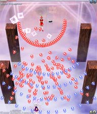
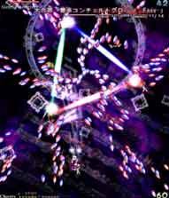

はじめに
この4面ボスのプリズムリバー三姉妹との戦闘は特殊で、 最初の三姉妹が一人で戦ってくる時のキャラは、使用キャラに応じて変わります。
例えば、自キャラが霊夢だったらルナサ、魔理沙だったらリリカ、咲夜だったらメルランが出てくる。
次に、騒符「ファントムディニング」と云うスペルカード攻撃の時に一番ダメージを与えたキャラがその後の個人戦の相手になります。
ショートカット ルナサ（霊夢の場合） リリカ（魔理沙の場合） メルラン（咲夜の場合）
ルナサ（自キャラが霊夢の場合）
画面左下、右下に大弾と5つの白弾を撃ち、その大弾が紫弾に分裂する。
画面中央下ら辺にいれば大弾と白弾を避ける必要はなく、紫弾のみ避ければ良いだけなので楽。
時間が経つと弾を撃つ間隔が短くなって大変になるので早期決着を！！
赤、青、紫の粒弾を撃つ攻撃。
隙間を縫って避けるしかないのでよく画面を見つめよう。
紫弾が他の色より弾の密度が薄いかも。
リリカ（自キャラが魔理沙の場合）
自機狙いのくさび弾の連続。
自機を狙ってるため、ちょっと横に動けば簡単に避けられるので何回か練習してコツを掴もう。
自機狙いの5方向に広がる赤弾と横に広がる青弾の攻撃。
赤弾の隙間に入って避けよう。
この攻撃は厳しいのでボムを撃つ勇気を。
メルラン（自キャラが咲夜の場合）
3way直線青弾と自機狙いの変形レーザーを撃ってくる。
自機狙いレーザーの動きがいやらしいので少し大きめに動こう。
青弾の隙間を高速移動で横切るのも大事。
自機狙い直線レーザーとそれに付いてくる赤弾の攻撃。
低速で落ち着いて横にちょっと避ければ問題ないけど弾速が遅い赤弾に当たらないよう注意。
長引くと追い詰められる可能性もあるので低速ショットで撃ち込もう。
騒符「ファントムディニング -Easy-」
円状に広がる丸弾と自機狙いのくさび弾の攻撃。
自機狙いを自機に引き付けつつ、ちょっとずつ避けていくと良い。
自機狙いのくさび弾は3回目と4回目の間隔が微妙に長いのでその間に避ける方向を切りかえそう。
また、この攻撃の時に一番多くのダメージを与えたキャラが次の個人戦の相手になります。
ルナサ
かなり弾幕密度の濃い攻撃。
他と比べて密度の薄い場所があるにはあるが、やはり目で見て避けるので不安ならボム。
弦奏「グァルネリ・デル・ジェス -Easy-」
自機狙いの赤弾と1つの音符が3つに分裂する青弾の攻撃。
赤弾を自機に引き付けてちょっとずつ横に避けよう。青弾は目で見て避けるしかないものの、それほど難しくはない。
多分、これが三姉妹の個人スペルカード攻撃の中で一番簡単かも。
リリカ

自機狙いの5方向に広がる赤弾と横に広がる青弾の攻撃。
やはりさっきの攻撃の強化バージョン。むしろバージョンダウンしてるかもしれない。
端に追い込まれるとヤバイので注意。
冥鍵「ファツィオーリ冥奏 -Easy-」
赤と青の弾がうねってクロスする攻撃。
弾と弾の間を目で見て避けるしかないのでボムを使おう。
斜めに動くとミスりやすいらしいよ。
メルラン

さっきの個人戦のメルランのレーザー攻撃の強化バージョン
今回は攻撃の間隔が短くなってるのでちょっと忙しい。
避け方もさっきと同じで横にちょっと避けるだけ。弾速の遅い丸弾に注意。
管霊「ヒノファンタズム -Easy-」
曲がるレーザーが画面右下などに向かい赤弾に分裂する攻撃。
イージーなら弾幕密度が薄いので気合で避けたいところ。
トリッキーな動きのレーザーに直撃しないよう注意。
合葬「プリズムコンチェルト -Easy-」
真ん中のキャラが全方向弾を撃ち、左右のキャラがレーザーを出す。
このレーザーは全方向弾の軌道を変化させるので厄介だ。
三姉妹が全員出てきた時は三人全員に当たり判定があるのでボムを使うとかなりゲージを削れる。
不安ならボムを撃つ勇気を！
大合葬「霊車コンチェルトグロッソ -Easy-」

回転しながららせん状に弾を撃ってくる攻撃。
最初は軌道が直線なので避けやすいが、三角形のレーザーを出してから弾の軌道が直線でなくなる。
そうなったら弾の塊ごと大きく避けるようにしよう。（塊と塊の隙間に入る感じで）
ある程度慣れてきたら弾の発射される中心に入って逆時計回りするのも面白い。
{kind=link}